Alternativas para presentaciones dinámicas
El Problema con las Diapositivas Tradicionales
Las presentaciones tradicionales, como las que hacemos normalmente en PowerPoint, pueden ser un poco sencillas porque el público se limita a mirar las diapositivas mientras el expositor explica. Esto puede hacer que algunas personas pierdan la atención o que no recuerden fácilmente la información.
Actualmente existen otras formas de hacer presentaciones más dinámicas e interactivas. Estas permiten que las personas participen, exploren la información, respondan preguntas o interactúen con diferentes elementos de la presentación.
Tipos de Plataformas Visuales e Interactivas
Prezi
Es la plataforma más conocida en esta categoría. Funciona sobre un lienzo abierto donde se colocan los elementos de la presentación y el presentador hace zoom para enfocar detalles específicos o se aleja para mostrar el panorama general.
Funciones clave:
- Lienzo abierto con zoom dinámico:
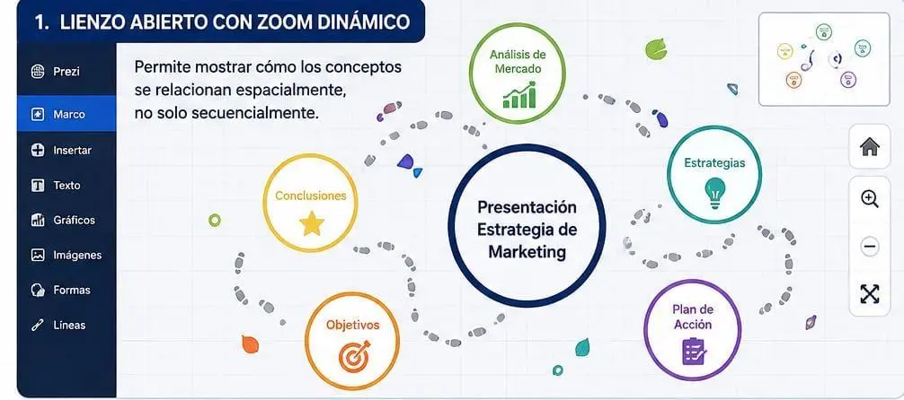
- Prezi AI: Genera presentaciones completas a partir de instrucciones detalladas cuatro veces más rápido que versiones anteriores
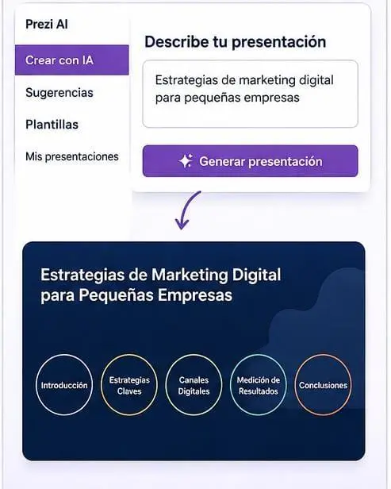
- Prezi Video: Permite al presentador aparecer junto al contenido en pantalla, ideal para seminarios web y clases virtuales.
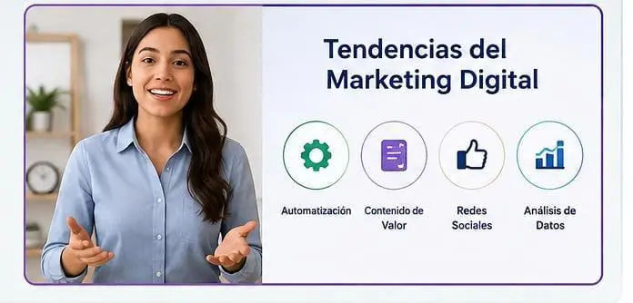
Genially
Es una plataforma española especializada en contenido interactivo que ha ganado reconocimiento internacional en el sector educativo. Fue reconocida como mejor herramienta de presentaciones en los EdTech Digest y como mejor iniciativa de tecnología educativa en los Global EdTech Startups Awards.
Funciones clave:
- Miles de plantillas interactivas
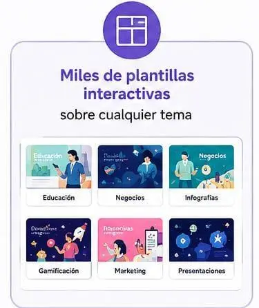
- Importación de PowerPoint:
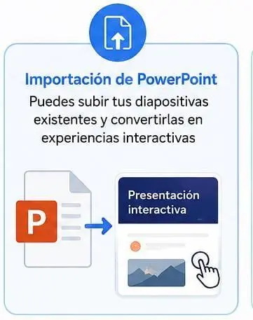
- Elementos interactivos:
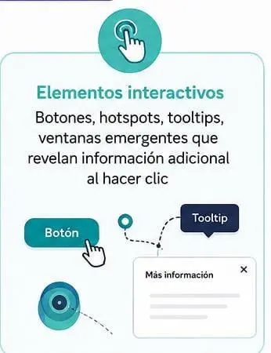
- Gamificación:
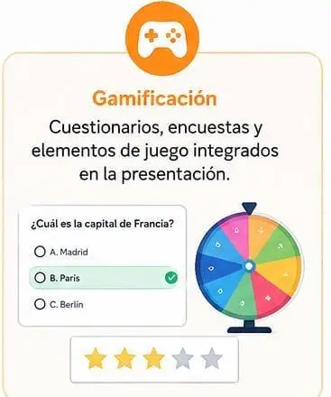
Diseño Asistido por IA (Generación Automática)
Estas plataformas utilizan inteligencia artificial para generar presentaciones completas a partir de una descripción o de datos existentes, automatizando el proceso de diseño.
Presentations.AI
Considerada una de las alternativas más potentes y completas a PowerPoint en 2026. Crea presentaciones completas a partir de una única indicación textual.
Funciones clave:
- Generación a partir de prompt:
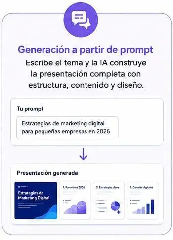
- Brand Sync:
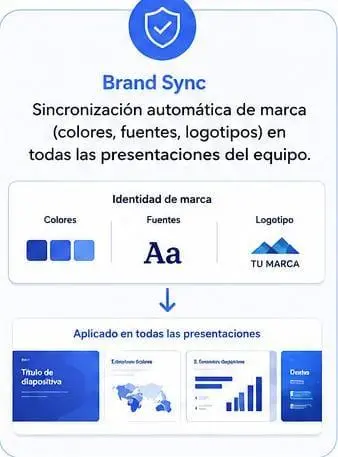
- Visualización de datos inteligente:
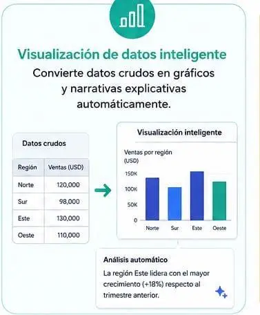
- Colaboración en tiempo real:
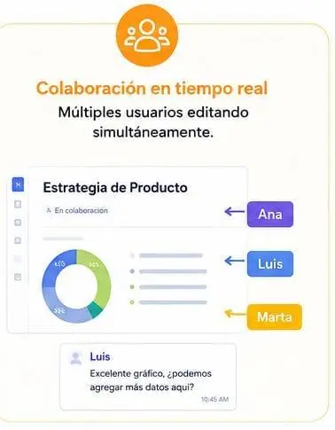
Gamma
Plataforma de generación automática con IA que se posiciona como una de las opciones más sólidas para probar en 2026.
Funciones clave:
- Generación de presentaciones completas a partir de prompts.
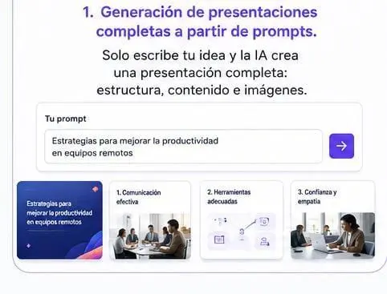
- Diseños adaptativos que responden al contenido.
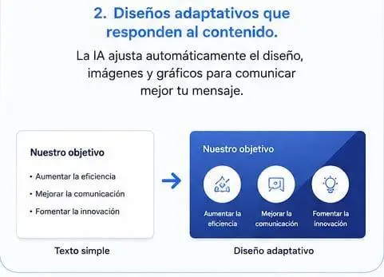
- Exportación en múltiples formatos.
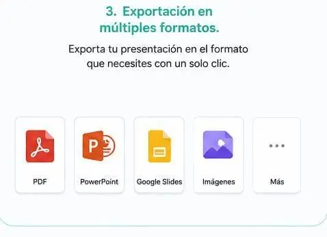
Colaboración en Tiempo Real (Nube)
Estas plataformas priorizan el trabajo simultáneo de múltiples usuarios y la accesibilidad desde cualquier dispositivo.
Google Slides
La alternativa gratuita y basada en la nube más popular. En 2026 incluye Gemini AI, que facilita la redacción de contenido, la generación de elementos visuales y la creación de notas para el orador.
Funciones clave:
- Colaboración en tiempo real: Múltiples usuarios editando simultáneamente con cursor visible
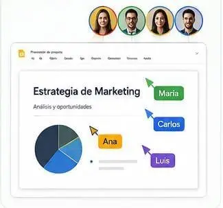
- Gemini AI integrado: Generación de contenido, imágenes y notas del orador
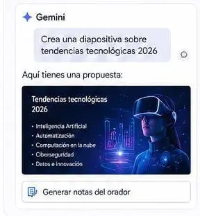
- Compatibilidad con PowerPoint: Abre y exporta archivos .pptx
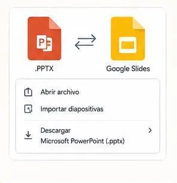
- Acceso desde cualquier dispositivo: Web, móvil, tablet
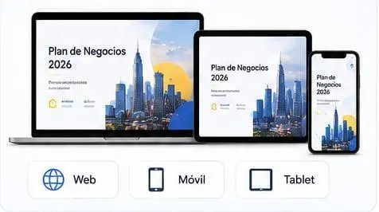
- Compartición fácil: Enlace con permisos configurables
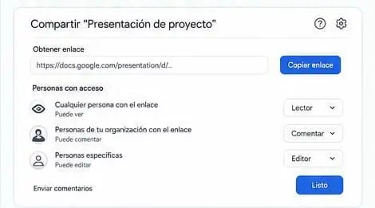
Pitch
Diseñada desde cero para la colaboración en equipo. Su interfaz se parece más a Figma que a PowerPoint, con espacios de trabajo compartidos, asignación de diapositivas, seguimiento del estado y flujos de aprobación.
Funciones clave:
- Coedición en tiempo real sin fricciones:
- Biblioteca de plantillas diseñadas para trabajo con clientes
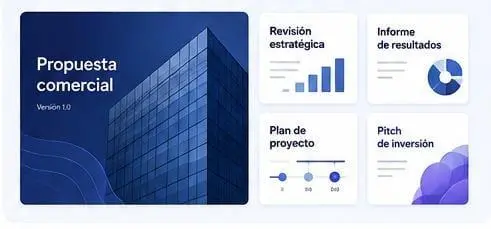
- Espacios de trabajo compartidos con comentarios e historial de versiones
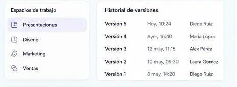
- IA asistencial: Ayuda a refinar y editar diapositivas (no genera presentaciones completas desde cero)
Diseño Visual e Infografías
Estas plataformas priorizan la estética visual y son ideales para presentaciones donde el impacto gráfico es tan importante como el contenido.
Canva
Ha evolucionado hasta convertirse en una de las herramientas de presentación más populares para personas sin experiencia en diseño. Ofrece una interfaz de arrastrar y soltar con una enorme biblioteca de plantillas.
Funciones clave:
- Magic Media: Herramientas de IA que convierten imágenes en videos y textos en gráficos personalizados.
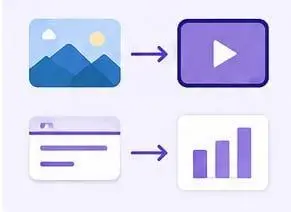
- Style Match: Alinea automáticamente nuevos gráficos con los colores y la estética de tu marca.
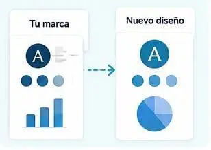
- Magic Insights: Convierte datos sin procesar en narrativas explicativas y gráficos listos para usar.
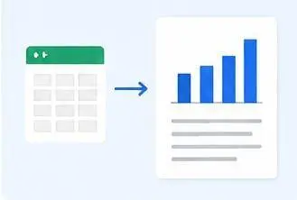
- Miles de plantillas de temáticas diversas
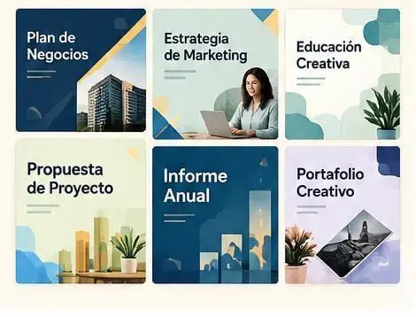
- Exportación múltiple: .pptx, PDF, video, o transformar la presentación en un sitio web interactivo
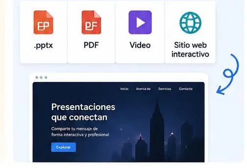
Visme
Ofrece una amplia variedad de plantillas, elementos de diseño y funciones interactivas. Su potente motor de visualización de datos convierte cifras y hojas de cálculo en gráficos o infografías listas para usar en segundos.
Funciones clave:
- Biblioteca de más de 900 diseños: Accede a millones de imágenes, iconos y gráficos personalizables para crear presentaciones únicas.
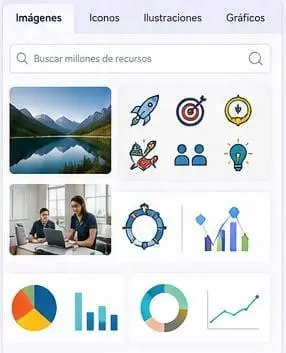
- Visme Presenter Studio: Permite grabar tu presentación con cámara y voz, editarla fácilmente y compartirla con tu audiencia.
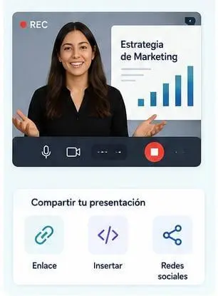
- Gráficos interactivos y mapas: Crea visualizaciones de datos interactivas y mapas dinámicos que tu audiencia puede explorar en tiempo real.
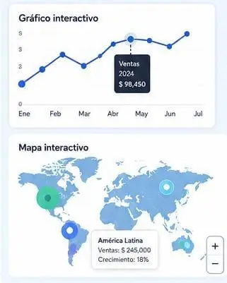